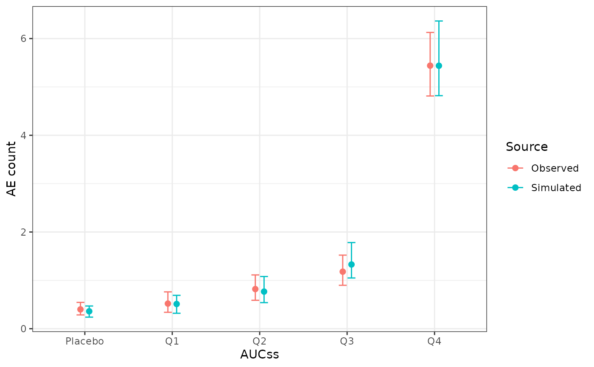

Compares observed response rates against simulated response rates from a
model, stratified by a grouping variable. This function is model-agnostic:
it operates purely on data frames, and can obtain those data frames in
either of two ways – see the sim/model arguments below.
Usage
er_vpc_plot(
data,
sim = NULL,
exposure,
response,
group_by,
model = NULL,
nsim = 100,
seed = NULL,
conf_level = 0.95,
response_type = c("auto", "binary", "continuous", "count")
)Arguments
- data
Observed data
- sim
Simulated data, with the same
exposure/response/group_bycolumns asdata, plus asim_idcolumn identifying each replicate. Mutually exclusive withmodel; supply exactly one of the two. Useful for a hand-built simulation, or a model-specific helper that doesn't go through theer_simulate()interface. Passingmodelinstead is preferred whenever the model implementser_simulate()'ssim_respextension (see er_model_interface).- exposure
Exposure variable (one variable, unquoted)
- response
Response variable (one variable, unquoted). May be binary (0/1, or logical) or continuous; see
response_type- group_by
Variable (unquoted) to stratify predictions
- model
A fitted exposure-response model implementing
er_simulate()with asim_respcolumn (see er_model_interface). Mutually exclusive withsim; supply exactly one of the two. When supplied,simis built internally viaer_simulate(model, newdata = data, nsim = nsim, seed = seed); an error is raised if the model'ser_simulate()method doesn't providesim_resp(either because it returnsNULL, i.e. no simulation support at all, or because it only supports the parameter-uncertainty-onlyfit_respused byer_style_model_spaghetti()– a VPC needs the fuller, response-level simulationsim_resprepresents; see er_model_interface for the distinction).- nsim
Number of simulation replicates, only used when
modelis supplied- seed
Optional RNG seed, only used when
modelis supplied- conf_level
Confidence level
- response_type
One of
"auto"(default),"binary","continuous", or"count". Governs how the observed-side summary is computed: response rate with a Clopper-Pearson CI for"binary", bin mean with a t-interval for"continuous"(seeci_t()), or bin mean with an exact Poisson interval for"count"(seeci_poisson())."auto"detects from the observedresponsecolumn (entirely in{0, 1}, or logical, is treated as binary; seeer_plot()'sresponse_typefor the same heuristic) and never resolves to"count": a count (Poisson-style) response auto-detects as"continuous"(counts aren't confined to{0, 1}) and is summarised with the bin-mean-plus-t-interval approximation unlessresponse_type = "count"is declared explicitly, in which case the exact Poisson interval is used instead – seePLAN.md's design decision (4) for the rationale.
Examples
if (requireNamespace("erglm", quietly = TRUE)) {
library(erglm)
mod <- erglm_model(ae2 ~ aucss + sex, erglm_data, family = binomial())
er_vpc_plot(erglm_data, exposure = aucss, response = ae2, group_by = aucss, model = mod)
er_vpc_plot(erglm_data, exposure = aucss, response = ae2, group_by = sex, model = mod)
mod_gaussian <- erglm_model(biomarker_change ~ aucss, erglm_data, family = gaussian())
er_vpc_plot(
erglm_data, exposure = aucss, response = biomarker_change,
group_by = aucss, model = mod_gaussian
)
mod_poisson <- erglm_model(ae_count ~ aucss, erglm_data, family = poisson())
er_vpc_plot(
erglm_data, exposure = aucss, response = ae_count, group_by = aucss,
model = mod_poisson, response_type = "count"
)
}
#> Using seed = 9984. Pass `seed = 9984` to reproduce this result.
#> Using seed = 5233. Pass `seed = 5233` to reproduce this result.
#> Using seed = 5650. Pass `seed = 5650` to reproduce this result.
#> Using seed = 2758. Pass `seed = 2758` to reproduce this result.
